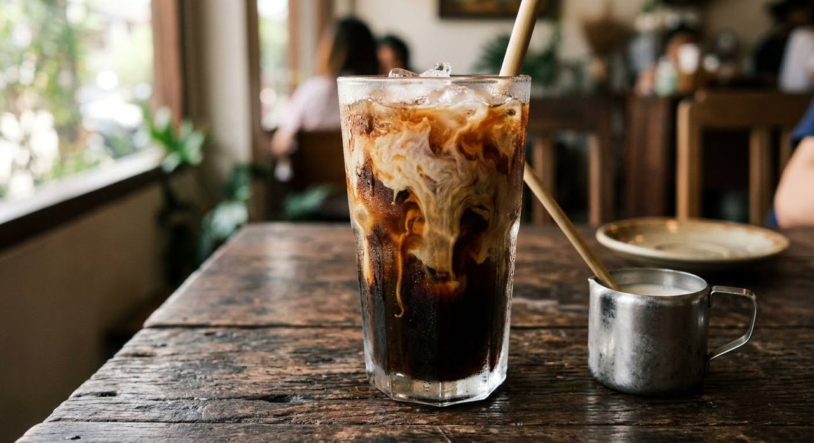

A cloth sock of roasted coffee steeped ten minutes, condensed milk dissolved into the glass, ice three-quarters up, evaporated milk poured over the top. The old café's brew — and its espresso-born sibling.

Ask for กาแฟเย็น — "cold coffee" — in Thailand and you'll be handed one of two things. The older one is โอเลี้ยง (oliang): black, sweet, no milk at all, brewed from a dark roasted blend the Chinese-Thai cafés of the last century made famous. Add the milk — condensed dissolved through it, evaporated poured over the top — and it becomes the drink the world calls Thai iced coffee, the one every café-boran (old-style coffee shop) still sells by the glass.
The brew matters. The coffee is made in a ถุงกาแฟ — a cloth sock, the powder steeped in boiling water for a full ten minutes, which extracts a thick, smoky, slightly bitter base that stands up to ice and two kinds of milk. This is not espresso with syrup; it's a different animal entirely.
The modern café version, เอสเย็น (es yen), builds the same glass on a double shot of espresso with a lighter hand on the condensed milk — closer to what you'd get in a Bangkok café today. Both are below; they share the glass, not the soul.
| Thai | English | Amount |
|---|---|---|
| ผงโอเลี้ยง | Roasted Thai coffee powder — the oliang blend | 5–6 tbsp |
| น้ำเดือด | Boiling water | 1½ cups |
| น้ำตาลทราย | Sugar — optional; the condensed milk already sweetens | 4 tbsp |
| นมข้นหวาน | Sweetened condensed milk | 9 tbsp |
| นมข้นจืด | Evaporated milk, to top | as liked |
| น้ำแข็ง | Ice — three-quarters of the glass | as needed |
Double-shot espresso 60 ml, fresh milk 60 ml, condensed milk 1 tbsp, sugar syrup ½ tbsp — stirred together, poured over ice. The roastery's rule: the coffee must stay clear over the milk, "sweet but not buried" — condensed and syrup together, never syrup alone.
Café kitchens keep a batch of นมผสม — mixed milk, two parts condensed to one part evaporated — ready to pour into any cold coffee. The home version is the recipe above, made by the glass.
Milk or not. Oliang is black and sweet; กาแฟเย็น takes the milk. Some cafés hand you one when you ask for the other — the boundary is genuinely fuzzy in Thai usage.
The sweetness. Condensed milk alone, sugar alone, or both. Kapook's traditional recipe lists the sugar as optional because the condensed milk does the job; Preda's café version keeps both but in small doses.
Evaporated milk: top or mix. The old cafés pour it over the ice as a layer; café recipes stir it in as part of a pre-mixed milk. Both are published.
Brew method. The ten-minute sock steep against drip, French press, or a straight espresso base. The sock is the classic; everything else is accommodation.
The bean. Oliang's dark blend — robusta with roasted grains in some blends — against the arabica double shots of the café version. One is smoky and bitter, the other clean.
This recipe is translated from the following Thai-language sources. Where they disagree, we've said so.
1. Kapook — "10 สูตรชงกาแฟโบราณ เมนูกาแฟยอดนิยมพร้อมเปิดร้าน" (the traditional กาแฟโบราณ sock-brew quantities) — cooking.kapook.com
2. Preda Roasting House — "สูตรชงเอสเย็น Thai Style" (the café double-shot recipe and the sweet-but-not-buried rule) — preda-roastinghouse.com
3. TrueID — "25 สูตรชงกาแฟสด สูตรชงชา ทำเองได้ ทำขายรวย" (the café's mixed-milk standard, two parts condensed to one evaporated) — food.trueid.net